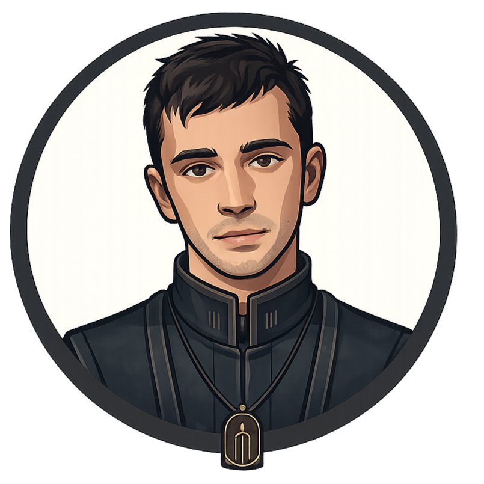

Una historia sobre recordar quién eres cuando una ciudad entera
intenta decidirlo por ti.
Tu lectura0%
Tu primera lecturaAún no comenzaste
Parte I
La ciudad sin horizonte
Elige un capítulo, continúa donde lo dejaste o explora los extras disponibles.
0 de 0 leídos
REGISTRO DEL LECTOR // DISPOSITIVO LOCAL
Tu recorrido
El progreso abre nuevas partes, arcos y documentos sin interrumpir la lectura.
Capítulos0 / 0
Sellos0 / 12
ModoRecorrido narrativo
LOGROS // SELLOS RECUPERADOSEXTRAS // ARCHIVOS
Ediciones digitales
Biblioteca
Descarga gratuitamente las ediciones disponibles de Sahlo Folina en Word o PDF.
Elige el formato que prefieras para lectura personal; ninguna edición está autorizada para la venta.
Colección publicada
Ediciones disponibles
Cargando ediciones…
Acerca del proyecto
Sobre la obra
Sahlo Folina es una novelización fan gratuita que transforma la documentación narrativa de Dema, Trench y Clancy en una historia continua, organizada para leerse como una saga editorial.
01
Qué es Sahlo Folina
La obra reconstruye los acontecimientos del universo narrativo de Twenty One Pilots mediante capítulos, interludios, documentos internos y recursos visuales. Su propósito no es sustituir el material oficial, sino ofrecer una lectura literaria coherente para quienes desean recorrer el lore como una sola historia.
02
Canon, interpretación y fanon
La base procede de cartas, videos, letras, material de DMA ORG y otras fuentes oficiales. Cuando el canon deja espacios abiertos, la narración utiliza interpretación editorial y elementos fanon para enlazar escenas, desarrollar personajes y conservar la continuidad. Esos añadidos forman parte de esta versión novelada, no del canon oficial.
03
Cómo está organizada
La saga se divide en partes que corresponden a etapas narrativas distintas. Cada parte posee su propia identidad visual, índice y paleta de lectura. La Parte V se organiza además en un prólogo independiente y tres arcos, permitiendo recorrer una sección extensa sin perder la posición ni el sentido de progresión.
04
Una experiencia de lectura
El website conserva el progreso local, permite continuar desde el último capítulo y ofrece preferencias de tamaño, ancho, tipografía, tema y animaciones. Los manuscritos publicados también pueden descargarse gratuitamente desde la Biblioteca para lectura personal en PDF o Word.
Capítulo—
0%
Obra fan gratuita
Aclaración legal y editorial
Sahlo Folina combina canon, fanon e interpretación editorial basada en el lore oficial.
Los elementos oficiales pertenecen a sus respectivos titulares. Esta obra no se vende.
Registro del lector
Tu cuenta
Sincroniza progreso, marcadores, logros, citas y avatar entre el sitio y la app.
Lectura0%
Capítulos0 / 0
Sellos0 / 12
Invitado · guardado en este dispositivo
LECTOR INVITADO // DISPOSITIVO LOCAL
Tu recorrido ya está guardado en este dispositivo. Entra o crea una cuenta para sincronizarlo entre el sitio y la app.

LectorSincronización lista—
Avatar autorizado
MODO LIBRE // SPOILERS
Advertencia
El modo lectura libre desbloquea capítulos, arcos y extras antes de tiempo. Puede revelar información importante de partes que todavía no has completado.